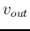
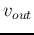
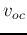
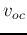
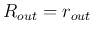

Next: About this document ...
Up: Chapter 2: Circuit Principles
Previous: Two-Port Networks
So far all circuits we have discussed are composed of passive components
(resistors, capacitors and inductors) driven by current and voltage sources.
In the future we will be considering active components such as bipolar
junction transistors (BJT) and field-effect transistors (FET), operational
amplifiers (Op-Amps), as well as more sophisticated circuits such as voltage
amplification circuits. These active components (as simple as single transistors
and as complicated as some Op-Amps) can be considered as controlled current or
voltage sources that generate current or voltage depending on the input current
or voltage.
For the purpose of describing the overall function and performance of such
components and circuits (instead of its internal structure and implementation),
a general model can be used with the following three parameters:
- Gain
 : The output voltage  is related to the input voltage
: The output voltage  is related to the input voltage
 by
, usually .
by
, usually .
- Input impedance (resistance) : It is desirable to have a
large so that little input current is drawn from the source, i.e.,
the source is minimally affected by the amplifier as a load. Ideally
.
- Output impedance (resistance) : It is desirable to have
a small so that little voltage drop across this resistance will
result when the load of the amplifier draws a current from the amplifier, i.e.,
the load will minimally affect the output voltage of the amplifier.

Example 1:

Ideally when and ,
.
Example 2:

The terms ``voltage gain'' , ``current gain'' , and ``power gain''
need to be specifically defined for different circuit configurations. In this case,
they can be defined as below:
- Voltage gain : defined as the ratio of the output voltage
to the source voltage:
Ideally, when , , we have and .
- Current gain : defined as the ratio of the output current to
the input current:
Ideally, when , , we have .
- Power gain : defined as the ratio of the power delivered to the
load to that to the amplifier:
The alternative definitions of these voltage, current, and power gains may be
used, depending on the specific applications.
The voltage amplifier can be used as a component (a building block) in a
larger circuit, such as two-port network with input port between terminals
A and B and output port between terminals C and D. This network can be in turn
described in terms of the three parameters, the open-circuit voltage gain,
the input resistance and output resistance, as shown below:
- Input resistance : This is the resistance between the two
terminals A and B of the input port, while a load
 is connected to the
output port between terminals C and D. can be obtained as the ratio:
is connected to the
output port between terminals C and D. can be obtained as the ratio:
In general is affected by the load .
- Output resistance
 : According to the Thevenin's theorem,
any one-port network can be treated as an ideal voltage source in series
with a resistance
: According to the Thevenin's theorem,
any one-port network can be treated as an ideal voltage source in series
with a resistance  . We apply this theorem to the output port and define
the output resistance as the Thevenin resistance
. We apply this theorem to the output port and define
the output resistance as the Thevenin resistance
while a voltage source with an internal resistance is applied
to the input port. In general, is affected by of the source.
- The open-circuit voltage gain
 : This is the ratio of the
open-circuit output voltage  (without a load () to an
ideal voltage source
: This is the ratio of the
open-circuit output voltage  (without a load () to an
ideal voltage source
Note that a non-ideal source with internal resistance is used in the definition
of as it is affected by , while an ideal source with is
assumed in the definition of and . In case the source is not
ideal with , we will use the voltage appearing across the input
port as the input voltage.
Example 3:

Find , , and of this two-port network containing
 and as well as the amplifier modeled by , and .
and as well as the amplifier modeled by , and .
- Input resistance: By inspection, the input resistance of this
2-port network can be found to be
.
- Output resistance: We assume the internal voltage source is
Thevenin voltage , and get the open-circuit voltage
and the short-circuit current
. The output resistance is
Alternatively, can be found as the resistance between the two terminals
C and D of the output port when the voltage source of the amplifier is turned off
(short-circuit), i.e.,
.
- Open-circuit voltage gain: This is the ratio of the voltage
across the output port to the voltage across the input port, when the
output port is an open circuit, i.e., .
This 2-port network modeled as a voltage amplifier with ,
and can be used in more complicated circuits.
Example 4:

Find the parameters , and of the two-port network
with the voltage amplifier embedded.
- Open-circuit voltage gain: As the output port is open circuit,
the output current is zero and so is the voltage drop across .
Applying an ideal voltage source to the input, we get the voltage
across and across , respectively:
The voltage across output port is therefore:
The open-circuit voltage gain can be found as the ratio of the open-circuit
output voltage to the input voltage:
if , the circuit is reduced to the original voltage amplifier and we
have .
- Output resistance: We first find the short-circuit current
at the output port. Assume a voltage source with internal resistance
is applied to the input port while the output port is short-circuited.
Applying KVL to the two loops of the circuit, we get:
Solving these two equations for the two unknowns  and , we get
and , we get
The open-circuit output voltage is
Now the output resistance can be found to be:
Note that is affected by internal resistance of the source.
When ,
i.e., the output resistance is much reduced. Moreover, when ,
.
- Input resistance: This can be found by applying an ideal voltage
source to the input port, while the output port is connected to a
load . The input resistance is
where is
the input current. Applying the KVL to the two loops of this circuit, we
get
Solving these two equations for the two unknowns and ,
we get
Now the input resistance can be found to be
Note that is affected by the load . When ,
, i.e., the input resistance is much increased.
Moreover, if , the circuit is reduced to the original voltage
amplifier with .
In summary, the resistor shared by both the input and output loops
serves as a negative feedback:
As the result, the voltage gain is reduced but both the input and
output resistances are improved, i.e., is increased and the
is reduced.
Example 5: (Homework)

A voltage amplifier, denoted by the box (solid line) with three internal
parameters , and , is used as a component in a two-port
network as shown. Fine the input resistance , output resistance
, and the open-circuit gain of the two-port network.
Note that when considering the input and output resistances of the network,
you should take into account the load and the internal resistance
of the source voltage.
Answer
Example 6: (Homework)

Two amplifiers with parameters , , and , ,
, respectively, can be connected in cascade as shown in the figure.
Given a voltage source in series with an internal resistance ,
find the output voltage. To maximize the output , how would you
change the values of the six parameters?
Find the power gain of the system.
Answer
Example 7: (Homework)
The input and output resistances and , as well as the voltage
gain of a two-port network can be obtained experimentally. First,
connect an ideal voltage source (a new battery with very low internal
resistance) in series with a resistor , and then connect load of
two different resistances to the output port. Now the three parameters can
be derived from the known values of , and the two measurements of
the load voltage , corresponding to the two resistance values used.
Assume , , and the input voltage is measured to be
; also, assume the two different load resistors used are
and
respectively, with the two corresponding
output voltage and  . Find , and .
. Find , and .
Answer
Next: About this document ...
Up: Chapter 2: Circuit Principles
Previous: Two-Port Networks
Ruye Wang
2014-09-24